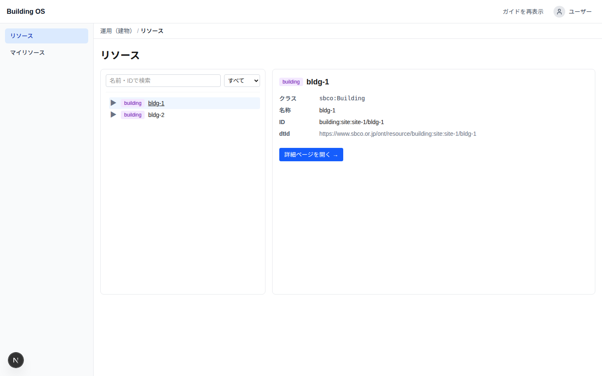

ビルのデータを、
オープンソースで動かす。
Building OS — OSS Edition は、ビル設備(空調・電力・環境センサー)のテレメトリ収集・蓄積・可視化から 機器制御までを一つに束ねた、セルフホスト型のオープンソース IoT プラットフォームです。
- Apache-2.0
- 東大グリーン ICT プロジェクト発
- Docker Compose で起動
東大グリーン ICT プロジェクトから、オープンソースへ
Building OS — OSS Edition は、東京大学グリーン ICT プロジェクト(GUTP)の研究成果物を 基にした派生プロダクトです。ビルの設備データを収集・活用する研究プラットフォームとして生まれ、 その知見を誰でも使えるかたちにするため、オープンソースとして再構成しました。
再構成にあたっては、クラウド(Azure)のマネージドサービスに依存していたスタックを、 NATS・MinIO・OxiGraph・Keycloak・PostgreSQL といったオープンソースだけで動く構成に 設計し直しています。オンプレミスでも、任意のクラウドでも、自分たちの手で運用できます。
※ 本プロダクトは研究成果物の派生であり、東京大学・グリーン ICT プロジェクト・原著者らによって 公式に提供・保証・サポートされるものではありません。
主な特徴
-
デジタルツイン中心設計
建物→フロア→空間→機器→ポイントの階層を、SPARQL(OxiGraph / SBCO オントロジー)で管理。 このデジタルツインが、システム全体のポイントリストの正本になります。
-
階層型テレメトリ基盤
最新値は Hot(NATS KV)、履歴と集計は MinIO 上の Parquet レイク(Warm / Cold)。 単一の API がデータの置き場所を自動選択するので、利用者は階層を意識せずに読み出せます。
-
ポイント単位の制御
空調の設定値変更などの制御を、ポイント単位・ゲートウェイ別ルーティングで実行。 オフラインのゲートウェイには即時にエラーを返し、すべての制御は監査証跡として記録されます。
-
標準への対応
SBCO を主語彙としつつ、Brick / REC / IFC / DTDL といった主要な建物オントロジー標準への 対応表を整備。既存の標準的な資産との橋渡しができます。
-
認証・認可
ユーザー認証は Keycloak(OIDC / JWT)。ゲートウェイなどの機器接続は mTLS による マシン認証で、人と機械のアクセスを分けて守ります。
-
フル可観測性
OpenTelemetry を軸に、Prometheus / Grafana / Loki / Tempo による監視スタックを オプションで同梱。必要なときだけ有効化できます。
